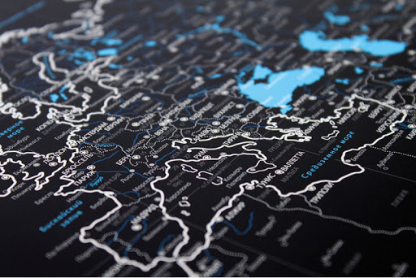

Выберите меню

Меню разработано на 28 дней. Каждый день разное блюдо.

Доставка
Доставка
и оплата
По Москве в пределах оранжевой зоны доставка бесплатная.
Вы можете выбрать удобный для вас пормежуток доставки от 30 до 60 минут (в зависимости от программы) с 6 до 12 дня. В синей зоне доплата составляет 250 рублей за каждую доставку, дополнительный счет пришлет менеджер после оформления заказа
Отзывы о нас

Елизавета Зверева
супер, класс, одобряю, не асуждаю

Мария Максимова
супер, класс, одобряю, не асуждаю

Мария Винокурова
супер, класс, одобряю, не асуждаю

Мария урова
супер, класс, одобряю, не асуждаю

Мариокурова
супер, класс, одобряю, не асуждаю

Мва
супер, класс, одобряю, не асуждаю

Минокурова
супер, класс, одобряю, не асуждаю

Dosso food
Решение проблемы нехватки времени на приготовление еды - доставка правильного питания в Москве Doso food. ВЫ получаете запас еды на неделю и больше не думаете о том, что приготовить, где купить и как выбрать самые свежие продукты. Мы привозим вам готовые упакованные завтраки, обеды, ужины и перекусы через день по утрам.
Здоровье и красота всегда идут рука об руку. Если вы хотите хорошо выглядеть и прекрасно себя чувствовать, то нужно обязательно следить за своим рационом. Мы уже составили для вас выверенное и сбалансированное меню. Каждое блюдо с любовью и искренней заботой готовят опытные повара, а мы тщательно выбираем самые свежие экологически чистые продукты. Поэтому заказ еды в Doso food - это не только просто, быстро и полезно, но еще и очень вкусно.